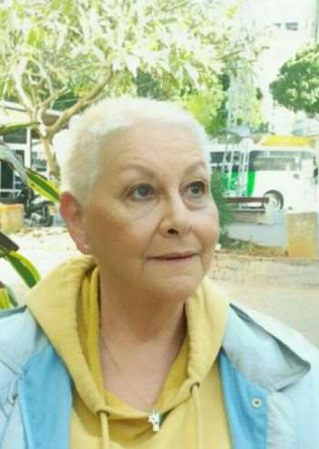
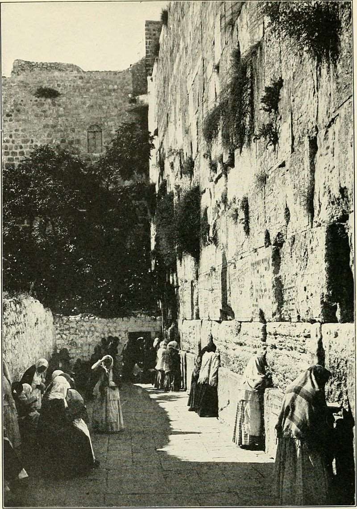
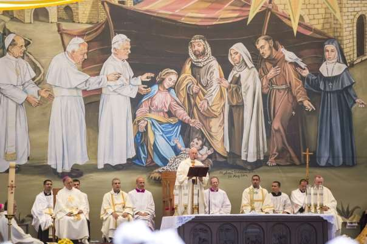

10 décembre 2017 Texte original italien en ligne sur le site de l’ADI (Amis d’Israël).
Traduction française par Menahem R. Macina

Cher Pontife,
Je suis ici pour vous écrire, pour exprimer ma déception en tant qu'être humain à vos propos suite à la déclaration de Donald Trump sur Jérusalem, Capitale d'Israël.
Dès que la décision du président américain est devenue publique, vous avez été l’un des premiers à la commenter, et vous l'avez fait exactement comme je m'y attendais. Pas de mot de paix, pas de recommandation aux Arabes (Palestiniens) d’éviter la violence et le terrorisme, pas d'appel au calme, encore moins une référence au droit d'Israël de voir reconnue sa capitale millénaire.
Vos paroles, complètement biaisées et explicitement dirigées vers l'État juif, étaient les suivantes:
« Je ne peux pas garder le silence sur ma profonde préoccupation face à la situation qui s'est manifestée ces derniers jours et je veux, en même temps, adresser un appel sincère à ce que tous s’engagent à respecter le statu quo de la ville, conformément aux résolutions pertinentes des Nations Unies. Jérusalem est une ville unique, sacrée pour les juifs, les chrétiens et les musulmans, qui vénèrent les lieux saints de leurs religions respectives, et elle a une vocation spéciale pour la paix. Je prie le Seigneur que cette identité soit préservée et renforcée au profit de la Terre Sainte, du Moyen- Orient et du monde entier et que la sagesse et la prudence prévalent, pour éviter d'ajouter de nouveaux éléments de tension dans un monde déjà convulsé et marqué par de nombreux et cruels conflits ».
Je me demande pourquoi vous avez jugé nécessaire d'invoquer le statu quo, puisque (vous le savez parfaitement), Israël a toujours garanti la liberté de culte pour toutes les religions, malgré les attaques de la guerre arabe et le terrorisme palestinien. Non seulement pour les trois religions monothéistes, mais aussi pour les Bahaï qui ont fui la persécution en Iran et ont trouvé refuge en Israël, où se dresse, à Haïfa, leur plus beau temple, et pour toutes les autres religions existantes dans le pays.
Pourquoi avez-vous voulu prendre les devants en sachant très bien qu'Israël est une démocratie et comment il se comporte vis-à-vis de toutes les religions? Et d’ailleurs, de quel statut parlez-vous? Celui qu’interprètent les Palestiniens par leur violence, avec des revendications sans fin, avec le droit d’interdire aux Juifs de gravir le Mont sans accord préalable du waqf?
Lorsque cette terre était occupée par l'Islam, les Turcs, puis la Jordanie, les Juifs et les Chrétiens ne pouvaient pas accéder à leurs lieux saints. L’accès leur en était interdit, quand ils n’étaient pas rasés, et le Kotel, sacré pour les Juifs parce que constituant le seul mur resté debout après la destruction du Temple de Salomon, a même été enfermé derrière un autre mur contre lequel avaient été installées des latrines publiques.

Et vous, pontife, vous parlez de statu quo, sachant pertinemment que les Juifs d'aujourd'hui ne peuvent accéder au Mont du Temple (Bet Hamiqdash) qu’à des moments fixés par les Arabes, et que, quand ils y arrivent, ils sont attaqués par des femmes des hommes et des enfants palestiniens qui crient, gesticulent, et leur crachent dessus.
Est-ce là votre précieux statu quo, cher Pontife?
Au début de cette lettre, j'ai écrit que je ne m'attendais à vos paroles et j’ai expliqué pourquoi.
Vous souvenez-vous des massacres de Charlie Hebdo et du Superkasher, à Paris? Vous souvenez-vous des morts au cri d'Allah wakbar? Et vous souvenez-vous de votre commentaire dans l'avion qui vous a ramené à Rome après un de vos nombreux voyages à l'étranger?
Je m'en souviens bien parce que c'est à ce moment-là que j'ai perdu mes illusions et mon estime à votre égard:
« Mais si quelqu'un offense ma mère, eh bien, je le frappe ».
Ce sont là vos paroles, cruelles et dangereuses, qui justifient les terroristes, meurtriers de journalistes coupables d'avoir caricaturé Mahomet.
Après cela, d'autres faits sont venus augmenter ma désillusion.
Ce fut le cas quand, à Bethléem, vous avez fait arrêter la voiture pour aller devant le mur de la ligne de vie... la nôtre, pour prier.
Ne saviez-vous pas que ce mur a été construit pour bloquer les tentatives de terroristes qui se rendaient quotidiennement en Israël et faisaient des dizaines de morts parmi la population civile?
Que dites-vous?
Vous le saviez?
Alors pourquoi êtes-vous allé là pour prier?
Y avez-vous été forcé par votre cher ami Abu Mazen [Mahmoud Abbas]?
Je l’ignore, mais, je suis généreuse et je vous accorde le bénéfice du doute, même si je crois qu'un Pontife suprême a le pouvoir de dire non à un terroriste.
Par contre, je n’inscris pas du tout à votre bénéfice cette Messe célébrée sous une image gigantesque de l'Enfant-Jésus emmailloté dans un keffieh palestinien.

Ne me dites pas, cher Pape, vous qui êtes le chef suprême de l'Eglise catholique, que vous ne savez pas que Jésus était Juif, et que c’est en tant que Juif qu’il a vécu, qu’il est mort, et qu’il a fait sa bar mitzvah juive à Jérusalem devant des rabbins, à l'âge de 13 ans, comme tout enfant juif. Ne me dites que vous ne le savez pas!
Alors pourquoi? Qu'est-ce qui vous a amené à poser cet acte offensant pour tout le monde chrétien? Qu'est-ce qui a pu vous convaincre de vous soumettre aux racontars fantaisistes de la propagande arabe? La raison d'état? Quel état?
Il n'y a pas d'Etat palestinien, il n'y a qu'un « ramassis de terroristes, qui se sont auto- proclamés Palestiniens, alors que ceux qui portaient ce nom étaient les Juifs qui vivaient au temps du Mandat britannique sur la Palestine, et ceux-là veulent détruire un Etat souverain, Israël! À ces épisodes, je veux ajouter l’expression de votre visage grave et de vos sourcils froncés quand vous vous êtes rendu à la Grande Synagogue de Rome: on voyait de loin que vous n’étiez ni heureux ni serein. Il était visible que vous n’aimiez pas être là, craignant peut-être de faire quelque chose qui soit désagréable aux musulmans. Vous ne devriez pas vous inquiéter, il n’y a que deux ans que vous êtes allé vous prosterner, pieds nus, sur le sol de la Mosquée Bleue à Istanbul où l’on vous a parlé aimablement, vous prodiguant quantité de sourires et d’embrassades généreuses. À mon avis, cela devait suffire à équilibrer les choses, même l'intolérance et la haine islamique des infidèles juifs.
Je conclus cette mienne lettre après vous avoir vu, au lendemain de la déclaration de Donald Trump, recevoir sans délai une délégation palestinienne pour le dialogue interreligieux. Vous l’avez accueillie par ces mots:
«Pour l'Église catholique, c'est toujours une joie de construire des ponts, et c'est une joie particulière de le faire avec des personnalités religieuses et intellectuelles palestiniennes».
On dirait une blague, cher Pontife, c'est une blague!
A ce stade, rendue amère par tant de partialité chez celui qui devrait être totalement impartial, je vous salue, en vous assurant que, malgré votre amour pour la dictature palestinienne, Israël, une démocratie radieuse, accordera toujours la liberté de culte qu’il est le seul pays du Moyen-Orient à respecter, et où les chrétiens sont libres de prier et de vivre respectés et en paix.
Malheureusement, le petit nombre de ceux qui sont restés dans les territoires d'Abu Mazen et de Gaza n’ont pas ce droit.
Post-scriptum: Voici ma réponse à quelques remarques désobligeantes concernant mon prétendu « manque de respect pour la papauté » et ma défense, jugée « inadmissible, » du Mur de sécurité; elle tient dans l’article suivant, parmi des dizaines d’autres:
« Le dénigrement d'Israël par de hauts dignitaires religieux catholiques ».
Texte mis en ligne sur le site Academia.edu, le 17 avril 2018
Remis en course le 02 mars 2019 sur Academia.edu
1 Traduction française de la page Wikipedia consacrée à cette auteure. ↩